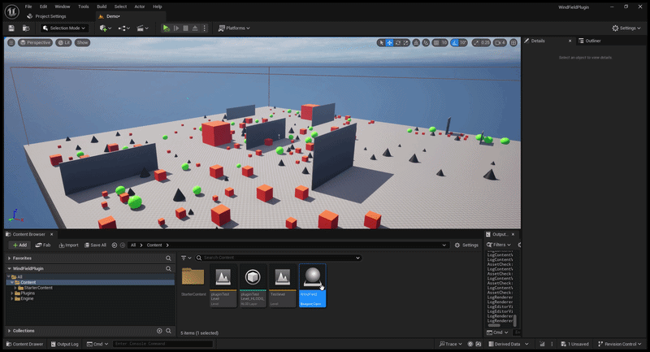

Tool not found. ◂ back to tools
01. OVERVIEW
WHAT IS WINDFIELD
{{ project.overviewIntro }}
{{ card.label }}
{{ card.title }}
{{ card.body }}

02. WHAT MAKES IT UNIQUE?
BUILT TO STAND ON ITS OWN
THIS PLUGIN
{{ c.title }}
{{ c.body }}
03. FEATURE DEEP DIVE
{{ d.title }}
{{ d.intro }}
▸{{ b }}
04. CUSTOMIZATION
DEEP CONTROL, ONE PROPERTY AT A TIME
{{ c.num }}
{{ c.title }}
{{ c.body }}
05. PERFORMANCE
REALISTIC WIND, WITHOUT THE COST
{{ s.value }}
{{ s.label }}
{{ s.body }}
06. HOW IT WORKS
TURNING MATH INTO WIND
{{ st.num }}
{{ st.title }}
{{ st.body }}
© ANANTHA PRASANTH
◂ BACK TO TOP